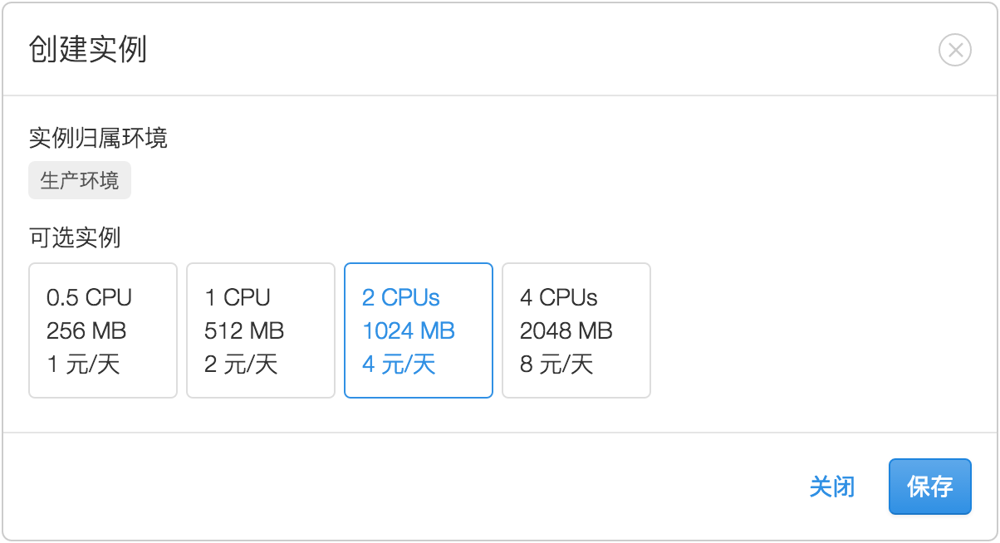
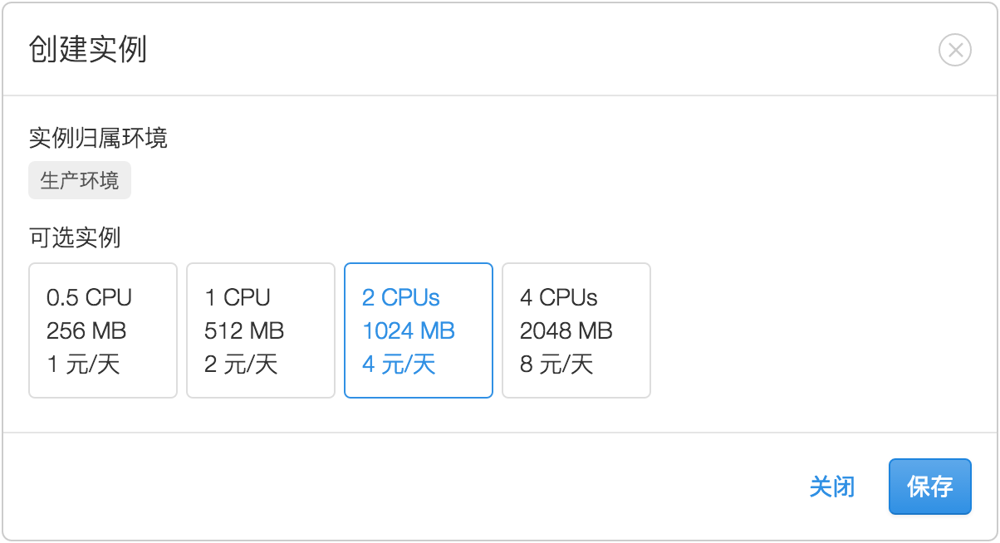

为了优化资源配置，我们为应用准备了「免费版」和「专业版」。
专业版针对商业用户和产品，可以提供系统水平扩展能力和一系列服务端运维支持，其特性为：
完全免费使用，适合测试和学习。其特性为：
为了兼顾资源配置和免费使用，免费版实例、专业版的预备环境实例会启用休眠策略。
休眠后如果有新的外部请求实例则马上启动。访问者的体验是第一个请求响应时间是 1 ~ 5 秒（视实例启动时间而定），后续访问响应速度恢复正常。
强制休眠：如果最近 24 小时内休眠累计不足 6 小时，则强制休眠。此时新的请求会收到 503 的错误响应码，该错误可在 云引擎 > 统计 > Status 页面 中查看。
应用默认为免费版，如需升级为专业版，可以在 云引擎实例 页面进行 升级到专业版 的操作。升级后应用将多出一个预备环境实例，随后开发者可以根据需要变更实例规格和创建更多的实例。
应用如需切换为免费版，则需要删除专业版下的所有生产环境实例。回到免费版后，预备环境实例随之消失，只存在一个默认的生产环境实例。
一个包含 0.5 CPU、256 MB 内存 的实例被定义为「基本资源」。
这一规格标明了该实例最大可以使用的硬件资源，即应用理论上最大 CPU 使用量为 50%，最大内存使用量 256 MB。
在专业版中，应用可以将基本资源组合使用：
注意：每个应用最多允许 4 个实例，每个实例最高规格为 4 CPU、2 GB 内存。如果需要更多资源，请联系 support@leancloud.cn。
为了防止实例因为资源使用超限而受到影响（特别是内存超限），我们建议：
要了解实例资源的耗用程度，请阅读 实例资源的使用量。
在专业版中，开发者允许使用多个实例，并以此来 提升整个应用的业务处理容量，保证服务的高可用性，但并不是说实例的数量越多越好。比如使用 8 个以上的实例反而会使部署周期变长（因为要重启的实例数量增多），这样多实例的好处就不明显了。
因此，我们建议将实例的数量控制在 2～4 个之间。
要了解实例所承担的业务压力的大小，请阅读 实例资源的使用量。
控制台 > 存储 > 云引擎 > 统计 页面显示出当前应用下所有实例资源的使用情况，开发者由此可以判断实例资源是否即将或已经超限。
后续我们会提供阈值告警服务，这样当 CPU 或内存的使用量达到开发者为应用所设置的阈值时，系统便会向开发者发送警告通知。要扩容实例资源请参考 选择实例规格 和 选择实例数量。
进入 控制台 > 存储 > 云引擎 > 云引擎实例，确认当前使用的是专业版。如果为免费版，则需要点击 升级到专业版 后再进行后续操作。
点击 生产环境 分组下的 创建新实例，选择所需要的资源规格，点击 保存。

图中可选实例的规格在未来可能会改变，请以控制台中的实际数字为准。
在专业版下创建实例会产生 使用费用，如果仅出于测试目的，请及时 切换至免费版 以避免产生不希望发生的费用。
已存在的实例不支持增加或减少容量，只能先删除再创建新容量的实例。
免费版实例、专业版的预备环境实例，均采用 标准资源的规格，所以不支持规格调整。
进入 控制台 > 存储 > 云引擎 > 云引擎实例，确认当前使用的是专业版。在 生产环境 分组中，点击实例右上角的图标 ，选择 删除。
免费版完全免费。
专业版采取按天扣费，使用时间不足一天按一天收费，次日凌晨系统从账户余额中扣费，费用明细可在 交易历史 中查看。
不同容量的云引擎实例的价格，请参考 官网报价。不同的节点使用不同的结算货币，价格会有差异，敬请留意。
例如，假设每个基本资源 1 元／天（实际价格以官网报价为准），即：
资源使用量按当天最大资源占用计算。假设某天从 0 点至 23:59 分之间：
则当天费用按照 8 个基本资源计算。
云引擎运行方案
为了优化资源配置，我们为应用准备了「免费版」和「专业版」。
专业版
专业版针对商业用户和产品，可以提供系统水平扩展能力和一系列服务端运维支持，其特性为：
负载均衡：两个及以上的实例可以实现负载均衡，这样系统会将请求分担给不同的实例来处理，从而提高整个应用处理并发访问的能力。
高可用性：同时多个实例还可以做到故障转移（failover），尽可能保障服务在意外情况下不中断，例如其中一个实例因为内存超限而重启，它的临时失效并不会影响整个服务。此外，多个实例可以分布在不同的服务器上，当一台服务器因为异常原因而短暂离线，其他不在该服务器上的实例仍可继续提供服务。
免费版
完全免费使用，适合测试和学习。其特性为：
休眠策略
为了兼顾资源配置和免费使用，免费版实例、专业版的预备环境实例会启用休眠策略。
休眠后如果有新的外部请求实例则马上启动。访问者的体验是第一个请求响应时间是 1 ~ 5 秒（视实例启动时间而定），后续访问响应速度恢复正常。
强制休眠：如果最近 24 小时内休眠累计不足 6 小时，则强制休眠。此时新的请求会收到 503 的错误响应码，该错误可在 云引擎 > 统计 > Status 页面 中查看。
方案切换
应用默认为免费版，如需升级为专业版，可以在 云引擎实例 页面进行 升级到专业版 的操作。升级后应用将多出一个预备环境实例，随后开发者可以根据需要变更实例规格和创建更多的实例。
应用如需切换为免费版，则需要删除专业版下的所有生产环境实例。回到免费版后，预备环境实例随之消失，只存在一个默认的生产环境实例。
实例资源
一个包含 0.5 CPU、256 MB 内存 的实例被定义为「基本资源」。
这一规格标明了该实例最大可以使用的硬件资源，即应用理论上最大 CPU 使用量为 50%，最大内存使用量 256 MB。
在专业版中，应用可以将基本资源组合使用：
注意：每个应用最多允许 4 个实例，每个实例最高规格为 4 CPU、2 GB 内存。如果需要更多资源，请联系 support@leancloud.cn。
选择实例规格
为了防止实例因为资源使用超限而受到影响（特别是内存超限），我们建议：
要了解实例资源的耗用程度，请阅读 实例资源的使用量。
对于 Node.js 应用，默认单进程最大使用 CPU 为 100%，内存为 1.5 GB。如果实例规格远远大于此使用量，就会出现实例资源无法被充分利用的情况。这时可以使用 Node.js 的 Cluster 模块，根据单进程资源占用情况和业务压力来决定启动几个 worker，让实例资源能被更充分地使用。
选择实例数量
在专业版中，开发者允许使用多个实例，并以此来 提升整个应用的业务处理容量，保证服务的高可用性，但并不是说实例的数量越多越好。比如使用 8 个以上的实例反而会使部署周期变长（因为要重启的实例数量增多），这样多实例的好处就不明显了。
因此，我们建议将实例的数量控制在 2～4 个之间。
要了解实例所承担的业务压力的大小，请阅读 实例资源的使用量。
实例资源的使用量
控制台 > 存储 > 云引擎 > 统计 页面显示出当前应用下所有实例资源的使用情况，开发者由此可以判断实例资源是否即将或已经超限。
曲线图展现出在一段时间内应用实际 CPU 的使用量。如果 CPU 接近或达到阈值，应用表现为请求响应时间延长。
曲线图展现出在一段时间内应用内存的实际使用量。如果内存使用量达到阈值，则相关的业务进程（比如 Node.js 进程或者 Python 进程）会因为内存溢出（OOM）而重启，从而导致业务处理中断，并且该实例在启动期间服务不可用。如果内存曲线图频繁地接近阈值然后忽然下降，就说明内存使用超限导致了进程重启。
若曲线图升高，说明 CPU 使用量达到或超过阈值，实例的 CPU 资源紧张。
所有实例资源使用量的总和。
单个实例的资源使用量。
后续我们会提供阈值告警服务，这样当 CPU 或内存的使用量达到开发者为应用所设置的阈值时，系统便会向开发者发送警告通知。要扩容实例资源请参考 选择实例规格 和 选择实例数量。
增加实例
进入 控制台 > 存储 > 云引擎 > 云引擎实例，确认当前使用的是专业版。如果为免费版，则需要点击 升级到专业版 后再进行后续操作。
点击 生产环境 分组下的 创建新实例，选择所需要的资源规格，点击 保存。

图中可选实例的规格在未来可能会改变，请以控制台中的实际数字为准。
在专业版下创建实例会产生 使用费用，如果仅出于测试目的，请及时 切换至免费版 以避免产生不希望发生的费用。
调整实例规格
已存在的实例不支持增加或减少容量，只能先删除再创建新容量的实例。
免费版实例、专业版的预备环境实例，均采用 标准资源的规格，所以不支持规格调整。
删除实例
进入 控制台 > 存储 > 云引擎 > 云引擎实例，确认当前使用的是专业版。在 生产环境 分组中，点击实例右上角的图标 ，选择 删除。
价格
免费版完全免费。
专业版采取按天扣费，使用时间不足一天按一天收费，次日凌晨系统从账户余额中扣费，费用明细可在 交易历史 中查看。
不同容量的云引擎实例的价格，请参考 官网报价。不同的节点使用不同的结算货币，价格会有差异，敬请留意。
例如，假设每个基本资源 1 元／天（实际价格以官网报价为准），即：
资源使用量按当天最大资源占用计算。假设某天从 0 点至 23:59 分之间：
则当天费用按照 8 个基本资源计算。